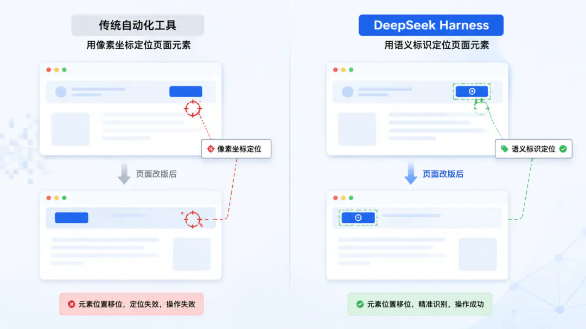
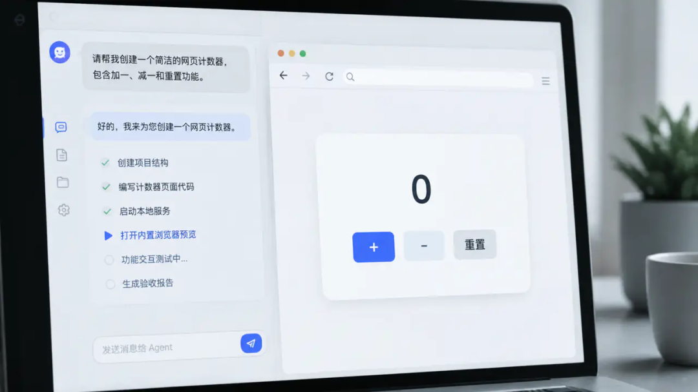
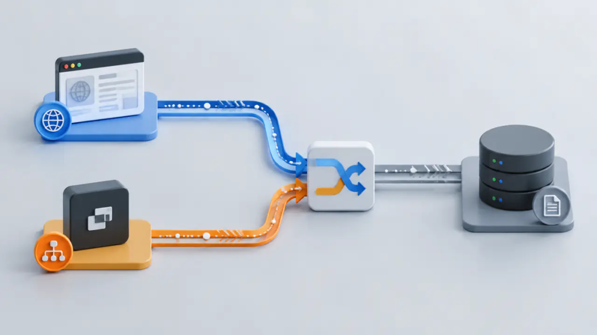

让 Agent 改完前端最痛苦的不是写代码，是验收——这次终于治好了
DeepSeek Harness 内置浏览器上线｜2分10秒零人工，14步全跑通
——— ✦ ———
你有没有过这种闹心的体验？让 Agent 写完前端页面、启动本地服务，结果页面直接弹去了系统浏览器。
对话窗口和渲染页面分属两个完全不连通的应用——你看到按钮错位要切回对话框用文字描述，Agent 改完你再切过去刷新。
本该闭环的排错验收流程，全靠人肉在两个窗口之间来回当传声筒。
更离谱的是，Agent 说「改好了」依据，往往只是自己读了一遍代码 diff。样式冲突、脚本报错、接口 404 这类只在真实浏览器里才会暴露的问题，它根本感知不到。
放到 2026 年的行业背景里看，AI Agent 自主网页结果验收技术，早已经跨过落地临界点。OSWorld 基准测试头部产品任务成功率突破 90%，依托语义化元素定位、MCP 标准协议的全闭环验收，已经在政务核验、渗透测试、自动化测试场景规模化落地。
而主打乐高式定制的开源 DeepSeek Harness，上线后 GitHub 星数两小时破万，是不少开发者改造本地生产力工作流的首选。
这一轮迭代，我们就把这块最后缺失的能力彻底补全了。
——— ✦ ———
这个用户提得最多的痛点，我们熬大夜堵上了
上一篇更新推送发出去之后，「跨窗口传声筒」这个问题在评论区被反复刷到。我们没去搞复杂的花活，就扎扎实实用了几十个小时攻坚。
2026年8月24日凌晨1:35，累计修改20个文件、新增3500多行代码的提交并入主干
2026 年 8 月 24 日凌晨 1 点 35 分，累计修改 20 个文件、新增 3500 多行代码的提交，正式并入项目主干。
对比一下同类产品：商用 Agent 比如 WorkBuddy、Codex 开箱即用但二次开发权限受限；不少不开源桌面办公智能体稳定性更高，但定制门槛极高。
这次我们把原生浏览器能力完全开源给所有开发者，彻底释放本地定制的可能性。
——— ✦ ———
现在浏览器直接长在对话侧边，Agent 能直接操控全页面
新版本右侧可以直接展开内置浏览器面板——它不是花架子预览，Agent 拿到了整套浏览器操作权限：导航、点击、输入、拖拽、刷新、修改视口、读取控制台日志、拉取全量网络请求，所有日常浏览器能实现的动作它全覆盖。
最巧妙的是快照设计。Agent 返回的不是一张静态截图，而是一份带语义编号的页面元素清单。
后续所有点击、输入指令，都基于「叫『增加计数』的按钮」这类语义标识触发，而不是死板的像素坐标。哪怕后续页面改版、元素位置完全移位，操作指令依然 100% 生效——再也不用担心传统自动化工具「元素位置一改就全失效」的问题。

传统工具靠像素坐标定位、改版就失效；DSH 用语义标识定位、改版依然精准
配套还新增了强制 browser 技能规则：Agent 改完 UI，不能只对比代码 diff 就宣称任务完成，必须自主打开页面跑完渲染、交互全流程实测，留存验收截图，才能正式交付结果。
作为用户，你全程掌控页面权限——地址栏、前进后退、刷新按钮全部开放，随时可以上手接管操作。
——— ✦ ———
2分10秒全自主跑通测试闭环，中途断服务都能自己救回来
功能好不好，纸面参数说了不算。我们直接给 Agent 出了一道无人干预的考试题——让它自己写一个带 bug 的计数器页面，自己复现 bug、自己修复、自己验收，全程不许调用系统浏览器。
Agent 自主写好存在缺陷的页面代码、拉起无依赖的本地 Node 服务，拿到端口后直接导航到页面。
连续点击两次计数器发现数值始终停在 1，读取控制台日志确认 bug 存在，拉取网络请求排除接口异常问题。
修改代码把计数变量挪到点击函数外部，重载页面重新连续点击两次，确认计数从 1 正常跳到 2。最后自主触发截图功能，把验收画面自动存进项目目录。

从写代码到拉服务到点按钮验收，全流程自动流转，工具调用仅 4.6 秒
整个全流程仅耗时 2 分 10 秒，其中真正的工具调用总时长只有 4.6 秒。
中途我们故意重启了一次应用，之前拉起的本地服务意外中断——Agent 打开页面发现连接失败后，没有返回找用户求助，而是自行重启了本地服务、更新了访问端口，顺着之前的测试进度继续完成了剩余验收流程。
1 轮对话、14 步操作，从收到指令到交付验收报告全程零人工干预。
——— ✦ ———
两处看不见的工程细节，决定了体验上限
这次功能有两个完全没写在使用文档里的底层设计，直接把长期使用的稳定性拉满。
细节一：一张动词表覆盖三个出口
浏览器操作的动作定义，同时供给模型侧 MCP 工具、命令行 dsh-browser、主进程执行引擎三个模块使用。三处动作命名完全统一，完全避免了不同模块各自实现导致的「动作漂移」问题。
连接用的 socket 地址和令牌全部通过环境变量传递，不会在本地磁盘留下任何明文敏感信息。
细节二：双采集路径记录网络请求
一条路径走官方浏览器调试协议，能拿到完整请求 ID、响应体和调用栈；另一条路径走 Electron 主进程监听，专门抓取跨页面跳转瞬间发出的「盲区」请求。两条路径交叉去重，Agent 查到的请求记录永远是完整的。

双采集路径交叉去重：官方调试协议 + Electron 主进程监听，盲区请求也抓得到
——— ✦ ———
现在就能直接上手体验
本次内置浏览器更新已经合并进项目主干，对应版本号 v0.1.14。项目完全采用 MIT 协议开源，仓库地址是 github.com/huyang218/dsh-desktop。
等不及安装包的开发者，直接拉取源码执行 npm install && npm start 两条命令，就能直接跑起来体验全功能。
最后还是要给所有开发者提个醒
① 项目仍处于 rc 测试阶段，本地端口没有配置鉴权，多人共用的机器一定要注意安全。
② macOS 安装包为 ad-hoc 签名，首次打开需要手动去「系统设置 → 隐私与安全性」页面点击允许。
——— ✦ ———
「写完了」和「真的验过了」之间的距离
从最开始实现双击就能运行的桌面版，到补全插件生态，到现在给 Agent 装上「传感」——这条开源迭代路线我们走得很扎实。
写代码的 Agent 不稀奇，稀奇的是它交付前愿意自己打开页面，亲手点一遍确认没问题。
「写完了」和「真的验过了」之间的那段距离，以前要靠人来回切窗口填补，现在它自己就能走完。这大概就是我们熬那个大夜的全部意义。
有了会自己开网页、自己点按钮做验收的 Agent，你第一个想让它干的活是什么？缺什么新能力也可以直接提——上一轮大家提的需求，这次已经实打实交到你手上了。
LZR，软件开发公司老板。文章编辑：LZR09029988业务范围：DAPP、小程序、APP、分销系统、商城系统开发，关注私信报价。